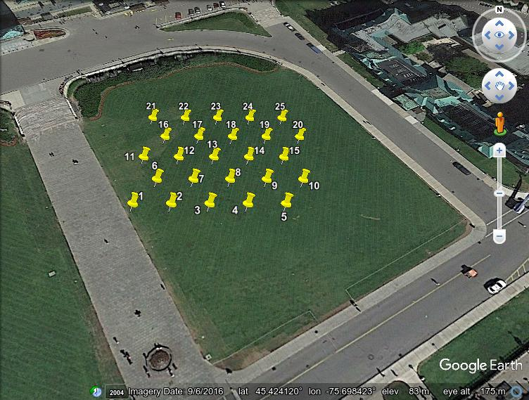

Calculate geographical coordinates for equidistant points at vertices of a triangular grid
I needed to set up a grid of equally spaced insect pheromone traps. While it is convenient to put traps at the vertices of a rectangular grid, this is not optimal because nearest neighbors on the diagonals are further away than those within rows or columns (If the spacing within rows and columns is X, then the diagonal spacing is sqrt(2)*X). For equidistant spacing, points are placed at vertices of a grid made with equilateral triangles. This python script calculates such a grid of points and returns the data as a KML file containing latitude/longitude coordinates in decimal degrees.
| #!/usr/bin/python3 | |
| import pyproj | |
| import simplekml | |
| ''' | |
| Generates a KML file with equally spaced points at vertices of a triangular grid. The epsg argument is the code for the UTM | |
| projection which converts lat/lon to meters. The epsg default value, EPSG:32655 is for Guam (zone 55n). | |
| Example: This command line places points equally spaced at 10 m on the lawn in front of the Canadian Parliament Building: | |
| $ python -c 'from triangular_grid import *; \ | |
| generate_equidistant_points(epsg="EPSG:32618", ll_longitude=-75.698873, ll_latitude=45.424078, meters_between_points=10)' | |
| ''' | |
| def generate_equidistant_points(epsg='EPSG:32655', meters_between_points=100.0, | |
| ll_longitude=144.71318, ll_latitude=13.26232, ncols=5, nrows=5, | |
| kml_file='points.kml'): | |
| wgs84=pyproj.Proj(init='EPSG:4326') # LatLon with WGS84 datum used by GPS units and Google Earth | |
| utm=pyproj.Proj(init=epsg) # UTM coords (Cartesian coordinates in meters) | |
| hdist = meters_between_points # horizontal distance between points | |
| vdist = meters_between_points * (0.75**0.5) # vertical distance between points | |
| x0, y0 = pyproj.transform(wgs84, utm, ll_longitude, ll_latitude) # convert lon lat to Cartesian coordinates in meters (UTM) | |
| x = x0; y = y0; i = 0; kml = simplekml.Kml() | |
| for row in range(nrows): | |
| y = y0 + row * vdist | |
| for col in range(ncols): | |
| x = x0 + col * hdist | |
| if row % 2 != 0: # Odd numbered rows are offset by dist/2 | |
| x = x + hdist / 2 | |
| lon, lat = pyproj.transform(utm, wgs84, x, y) # convert UTM back to lon lat | |
| i = i + 1 | |
| kml.newpoint(name=str(i), coords=[(lon, lat)]) | |
| kml.save(kml_file) | |
| return |
The KML file may be displayed using Google Earth.
